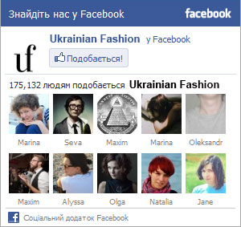

Gucci
Gucci (Гуччи) – итальянский Модный дом, основанный в 1921 году Гуччио Гуччи во Флоренции. Gucci считается одним из самых известных, престижных и легко узнаваемых модных брендов в мире. Дом Gucci принадлежит французскому конгломерату Pinault-Printemps-Redoute
История
В 1938 компания расширяется и открывает бутик в Риме. В 1947 году Gucci выпускает сумку с бамбуковыми ручками, которая до сих пор является фирменным продуктом компании. В течение 1950-х годов компания также разрабатывает фирменные полосатую узкую крепкую ткань и замшевые мокасины с металлическими застежками. После смерти Гучио в 1953 году его сын Альдо Гуччи помог направить компанию к международной известности, открыв первые бутики в Лондоне, Париже и Нью-Йорке. Даже в самые ранние годы компании семья Гуччи была известна своими яростными внутренними конфликтами. Разногласия по поводу наследства, фондовых вложений и каждодневных управлений магазинами часто разделяли семью и сводили в союзы. Собрания по поводу расширения сети за рубежом и будущего компании часто заканчивались вспышками гнева и метаниями друг в друга сумок и кошельков.
В конце 1960-х Gucci нацеливается на Дальний Восток для своего дальнейшего расширения, открыв магазины в Гонконге, Токио и Корее. В то же время компания разрабатывает свой известный логотип GG (инициалы Гуччо Гуччи), шёлковый шарф Flora, который носила голливудская актриса Грейс Келли, и плечевую сумку Jackie O, которую сделала знаменитой Джеки Кеннеди, жена президента США Джона Кеннеди. В конце 1970-х Gucci оставалась одной из первых компаний по производству предметов роскоши в мире, пока серия катастрофических деловых решений и семейных ссор почти не привела компанию к банкротству. В то время братья Альдо и Родольфо Гуччи контролировали ровно 50% долей компании. В 1979 году Альдо разрабатывает коллекцию аксессуаров Gucci Accessories Collection, или GAC, предполагая поддержать продажи сектора парфюмерных товаров Gucci Parfums, которыми занимались его сыновья. GAC включает в себя такие небольшие аксессуары, как косметички, зажигалки и ручки, которые стоили гораздо меньше, чем другие каталоговые аксессуары компании. Альдо перепоручает контроль над Parfums своему сыну Роберто из-за ослабевшего контроля над общим управлением компанией со стороны Родольфо.
Альдо Гуччи расширяет интересы компании, вливаясь в новые рынки, включая соглашение с American Motors Corporation (AMC). Автомобиль AMC Hornet 1972 года, укомплектованный фургоном «Sportabout», стал одним из первых американских автомобилей со специальной роскошной комплектацией, созданной известным модным дизайнером. Автомобили от Gucci изнутри смело обшиты полосатой зелёной, красной и бежевой текстурой, дизайнерскими эмблемами, внешний цвет авто также был подобран дизайнером. Несмотря на то что Gucci Accessories Collection расходилась хорошо, этот факт стал одним из мотивов разрушения династии Гуччи. В течение нескольких лет продукты от Parfums стали продаваться лучше, чем от Accessories. Новоиспеченный оптовый бизнес стал исключительным брендом для более, чем тысячи магазинов линии GAC и только в США, ухудшив положение бренда среди модных потребителей. Как пишет редактор Vanity Fair Грэйдон Картер (англ. Graydon Carter), «в 1960-х и 1970-х годах Gucci была на вершине шика, благодаря таким иконам, как Одри Хепберн, Грейс Келли и Жаклин Онассис. Но в 1980-х Gucci теряет своё положение, становясь клейким аэропортовым брендом.»
Дешёвые товары от Gucci наводнили маркеты, далее принижая имя компании. Тем временем, семейные ссоры сказывались не лучшим образом на делах компании в Италии. Родольфо и Альдо пререклись по поводу отделения Parfums, скудных 20% от доли которого контролировал Родольфо. В середине 1980-х, когда Альдо был осуждён за уклонение от уплаты налогов в США по показаниям собственного сына, возмутительные заголовки жёлтой прессы создавали публичный образ Gucci так же, как и товары компании.
Большие перетряски в компании произошли после смерти Родольфо в 1983 году, когда он оставил свои 50 % доли компании своему сыну Маурицио Гуччи (итал. Maurizio Gucci). Маурицио вместе с Паоло, сыном Альдо, решил увеличить своё влияние в Совете директоров компании и образовал для этого отделение лицензирования Gucci Licensing в Голландии.
После того, как остальное семейство покинуло компанию, впервые за последние годы лишь один человек стоял у руля компании Gucci. Маурицио прекратил семейные разногласия, которые рвали компанию изнутри, и решил искать другие таланты во имя будущего Gucci.
Gucci сегодня
В 1989 году Маурицио Гуччи убеждает Доун Мелло (англ. Dawn Mello), оживившую New York’s Bergdorf Goodman в 1970-х, что сделало ее звездой в розничном бизнесе, присоединиться к реструктурированной Gucci Group в качестве исполнительного вице-президента и всемирного креативного директора. У руля Gucci America был Доменико Де Соль (итал. Domenico De Sole), бывший юрист, помогавший Маурицио в реструктуризации компании в 1987 и 1989 годах. Последним дополнением к креативной команде, которая уже включала в себя дизайнеров от Джефри Бина (англ. Geoffrey Beene) до Келвина Кляйна, стал молодой дизайнер Том Форд. Выросший в Техасе и Нью-Мексико, он интересовался модой с подросткового возраста, но решил заняться карьерой дизайнера после того, как закончил Школу Дизайна Parsons в 1986 году по архитектурной специальности.
Ранние 1990-е стали для Gucci худшими годами в истории компании. Маурицио раздражает дистрибьюторов, акционеров Investcorp, и руководителей в Gucci America тем, что резко сдерживает продажи Gucci Accessories Collection, которая в США отдельно приносят 110 миллионов долларов дохода ежегодно. Новые аксессуары компании не могут преодолеть этого ослабления и, как следствие, следующие три года компания переносит тяжёлые потери и колеблется на грани банкротства. Маурицио был обаятельным человеком, который страстно любил свой семейный бизнес, но после четырёх лет большинство старших менеджеров компании принимает решение, что он неспособен более руководить компанией.
Его менеджмент возымел неблагоприятный эффект на желательность бренда, качество продукции и управление распределения. Он был вынужден продать свои доли компании Investcorp в августе 1993 года. Доун Мелло возвращается к своей работе в Bergdorf Goodman менее, чем через год после ухода Маурицио, а позицию креативного директора занимает 32-летний Том Форд. Форд проработал годы под невдохновляющим руководством Маурицио и Мелло и теперь захотел повернуть имидж компании в новом направлении. Де Соль, поднявшийся до должности президента и главного исполнительного директора Gucci Group NV, осознает, что если Gucci станет прибыльной компанией, это потребует нового имиджа, и он принимает новое видение Форда.
Бренды
Одежда
- Gucci (100 % доля собственности и 100 % производства часов)
- Yves Saint Laurent (100 %, также 100 % — парфюмерия и часы)
- Sergio Rossi (100 %)
- Bottega Veneta (78.5 %)
- Alexander McQueen (51 %, также парфюмерия — 100 %)
- Stella McCartney (50 %, также парфюмерия — 100 %)
- Balenciaga (91 %)
Парфюмерия
- Roger & Gallet
- Boucheron (также ювелирное дело и часы)
- Ermenegildo Zegna
- Oscar de la Renta
Часы
- Bedat & Co (85 %)
Ссылки
Материалы по теме «Gucci»
новости
Джорджио Армани для W.I.T.C.H
Когда я впервые узнала, что дизайнер Джорджио Армани готовит для героинь сериала W.I.T.C.H. эскизы...
16 июня, 11:31
публикации
Джорджо Армани создаст форму для Олимпийских игр
На травневих святах під час Rixos Fashion Weekend Армани Горобець встигла випити кисневого коктейлю з Андре Таном...
16 июня, 11:31
фото
Леди Гага снова поработает с Армани
Легендарний швейцарський бренд Bally запросив канал Ukrainian Fashion до свого київського бутіку.
16 июня, 11:31
новости
Джорджио Армани для W.I.T.C.H
Когда я впервые узнала, что дизайнер Джорджио Армани готовит для героинь сериала W.I.T.C.H. эскизы...
16 июня, 11:31
публикации
Джорджо Армани создаст форму для Олимпийских игр
На травневих святах під час Rixos Fashion Weekend Армани Горобець встигла випити кисневого коктейлю з Андре Таном...
16 июня, 11:31
фото
Леди Гага снова поработает с Армани
Легендарний швейцарський бренд Bally запросив канал Ukrainian Fashion до свого київського бутіку.
16 июня, 11:31
реклама



Понравилась одежда! Я вряд ли расскажу вам эту романтичную историю о том, как когда я был маленьким пятилетним мальчиком
Понравилась одежда! Я вряд ли расскажу вам эту романтичную историю о том, как когда я был маленьким пятилетним мальчиком
Понравилась одежда! Я вряд ли расскажу вам эту романтичную историю о том, как когда я был маленьким пятилетним мальчиком
Понравилась одежда! Я вряд ли расскажу вам эту романтичную историю о том, как когда я был маленьким пятилетним мальчиком
Понравилась одежда! Я вряд ли расскажу вам эту романтичную историю о том, как когда я был маленьким пятилетним мальчиком
Понравилась одежда! Я вряд ли расскажу вам эту романтичную историю о том, как когда я был маленьким пятилетним мальчиком
Понравилась одежда! Я вряд ли расскажу вам эту романтичную историю о том, как когда я был маленьким пятилетним мальчиком